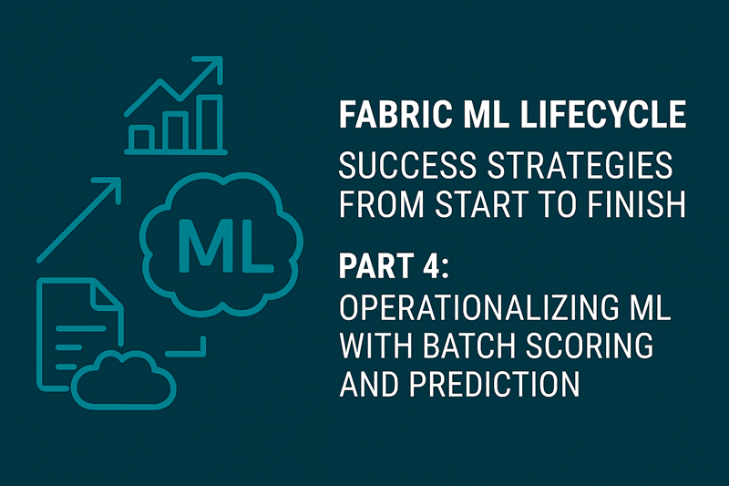
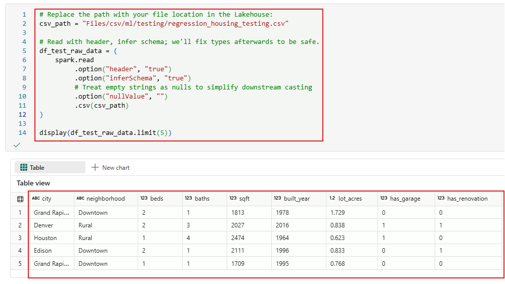
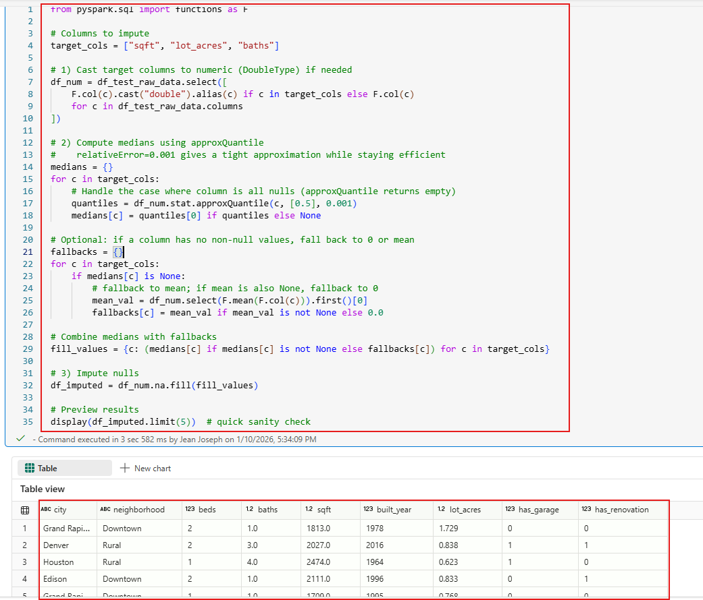
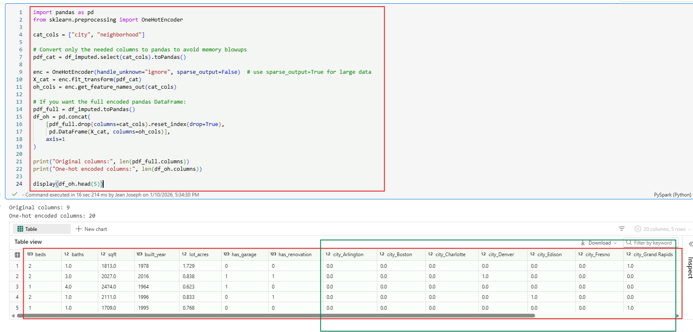
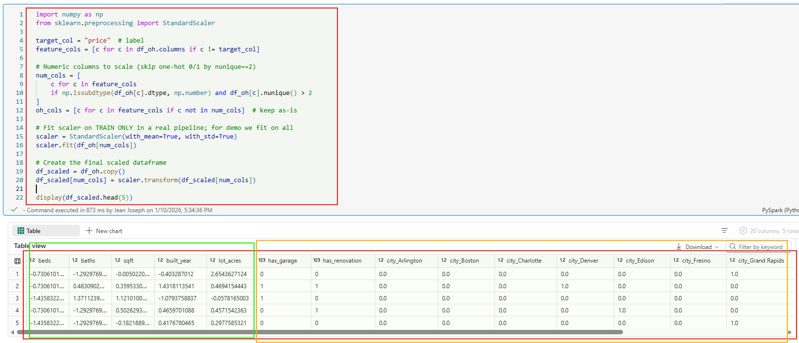
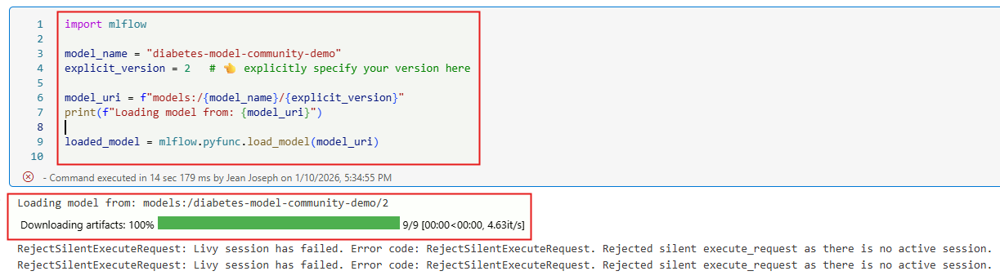
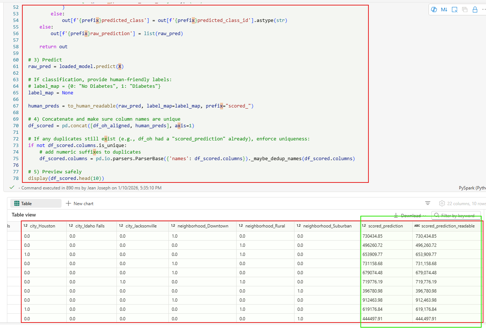
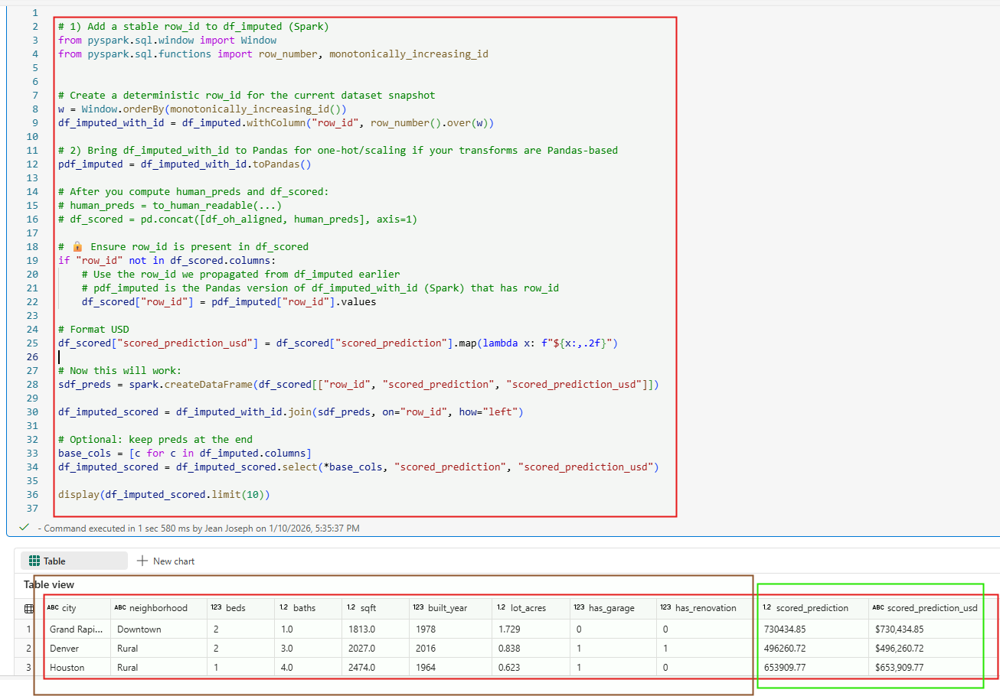

Fabric ML Lifecycle: Success Strategies from Start to Finish - Part-4
Operationalizing ML with Batch Scoring and Prediction

Table of Contents:
- Prerequisites for the Hands‑On Exercise: This section lists everything you need to complete the hands‑on batch scoring workflow.
- Introduction to Part 4: This section explains how Part 4 fits into the full ML lifecycle series.
- Understanding Batch Scoring in Microsoft Fabric: This section introduces batch scoring and how Fabric executes it at scale.
- Why Batch Scoring Matters: This section highlights the operational value and business impact of batch scoring.
- Key Considerations Before Implementing Batch Scoring: This section outlines the governance, capacity, and architectural factors to plan for.
- Preparing Input Data for Batch Predictions: This section shows how to load and clean fresh data before scoring.
- Reproducing Training‑Time Preprocessing: This section demonstrates how to apply the same preprocessing steps used during model training.
- Loading the Production Model: This section explains how to load the correct MLflow‑registered model version.
- Aligning Features with the Model Signature: This section ensures your input DataFrame matches the model’s expected schema.
- Running Predictions: This section runs the model’s predict function on the prepared dataset.
- Reconstructing and Saving Final Results: This section merges predictions with the original data and writes the output to the Lakehouse.
- Series Summary & Closing: This section wraps up the four‑part series and outlines next steps for readers.
Stay in the loop, follow us on LinkedIn to catch fresh articles every week.
This blog was inspired by Jean Joseph, a Data & AI driven professional with over tweenty years of experience helping organizations unlock insights through analytics and AI. If you are looking for consulting and training services, please reach out to the Tech-Insight-Group LLC team.
Prerequisites for Completing This Hands‑On Exercise
- Access to a Microsoft Fabric Tenant: You must have access to a Microsoft Fabric-enabled tenant. If your organization has not enabled Fabric yet, contact your administrator to activate it.
- A Provisioned Fabric Capacity: To run notebooks, Spark workloads, and Lakehouse operations, you need a Fabric capacity (F‑SKU or P‑SKU, trial capacity).
- A Lakehouse in Your Workspace: Create a new Lakehouse where you will store and explore the dataset. This Lakehouse will serve as the foundation for all EDA steps in this article.
- Download and Upload the test Dataset: Download the regression_housing.csv file provided with this article. Then upload it into the Files section of your Lakehouse so it can be accessed by your notebook.
- A Fabric Notebook: Create a new Fabric Notebook inside the same workspace. You will run all the code snippets from this article inside that notebook using the built‑in Spark runtime.
- Once these prerequisites are complete, you’re ready to follow the hands‑on instructions to perform Model Training and Model Evaluation in Part 3, which will prepare you to deploy the ML model and test it using batch scoring in Part 4.
Who is this article for?
These series of article are designed for data professionals, business leaders, and technical teams who want to successfully implement machine learning projects that deliver real business value. Whether you are a data scientist, ML engineer, or decision-maker exploring AI adoption, you’ll benefit from learning a proven, end-to-end strategy from framing the right problem to building and deploying scalable solutions in Microsoft Fabric.
This is a four-part article, and you are currently reading the Fourth Part. What is the objective here? It’s to share and remind you how to properly tackle a machine learning (ML) project from the ground up.
Success in ML doesn’t come from algorithms alone, it depends on how the entire pipeline is designed and aligned with business goals. Every step in the ML lifecycle, from data ingestion to deployment, has direct implications for cost efficiency, scalability, and customer trust. If the foundation is weak, even the most advanced models will fail to deliver meaningful results.
Our goal is to guide you through an end-to-end process that starts with identifying and framing the right problem, then leveraging Microsoft Fabric for development and implementation.
Introduction
This is the fourth article in a four‑part series. Part-1 covered how to frame your machine‑learning problem and choose the right model type. Part-2 focused on assessing data quality, structure, and readiness. In Part-3, we turn to model training, evaluation, and registration, transforming your prepared dataset into a production‑ready ML solution.
In this Part 4, we conclude the Fabric ML Lifecycle series by operationalizing your trained model through batch scoring and prediction. This final stage demonstrates how to deploy your model within Microsoft Fabric, run scalable batch inference across new data, and deliver actionable predictions into downstream systems.
By wrapping up with a production-ready scoring pipeline, you’ll complete the full ML lifecycle from problem framing to deployment - ensuring your solution is not only accurate but also impactful in real-world scenarios.
🧠 What Is Batch Scoring in Microsoft Fabric?
Microsoft Fabric batch scoring is the process of applying a trained and registered machine learning model to large volumes of new data, typically stored in your lakehouse to generate predictions at scale. Fabric uses Spark-based compute along with MLflow‑powered model signatures, tags, and metadata to validate inputs, enforce schema consistency, and maintain governance. This ensures that every scoring run is repeatable, reliable, and aligned with the model’s intended use.
⚡ Why Use Batch Scoring?
Batch scoring becomes valuable when you need production-grade, governed predictions delivered consistently across large datasets. It provides:
- Scalability to score thousands to millions of rows using Spark.
- Governance through MLflow signatures, tags, lineage, and versioning.
- Automation via pipelines and workflows for scheduled inference.
- Security by keeping data and models inside your Fabric workspace
- Operational readiness with predictions written back to the lakehouse for analytics, compliance, or downstream triggers
📅 When Should You Think About It?
You should consider batch scoring when:
- You’ve trained and registered a model (churn, fraud, recommendations, forecasting, etc.).
- You want to apply it to fresh lakehouse data on a recurring basis.
- You need repeatable, production-ready predictions, not ad hoc notebook tests.
- Your outputs feed Power BI dashboards, marketing campaigns, fraud alerts, or operational workflows.
- You want traceability, version control, and consistent schema validation across scoring runs.
⚠️ Key Considerations Before Using Microsoft Fabric
1. Licensing, Performance & Cost Model:
- Fabric uses a capacity-based model (F‑SKUs), not pay‑per‑job.
- You must size capacity correctly based on expected workloads (ETL, ML, BI, real-time).
- Over‑ or under‑provisioning can impact performance or cost efficiency.
- Fabric compute engines (Spark, SQL, KQL, Power BI) share the same capacity.
- Heavy workloads can compete unless you set capacity rules, throttling, or workload isolation.
- Consider how your existing pipelines (ADF, Databricks Jobs, Airflow) will integrate or migrate.
2. Workspace & Tenant Governance:
- Fabric is tightly integrated with Microsoft Entra ID, so RBAC, workspace roles, and data access policies must be planned.
- Consider how you’ll manage multi‑team workspaces, isolation, and data boundaries.
Preparing the Input DataFrame for Batch Predictions
Enough talk, let’s put this into motion. Before we can run batch scoring in Microsoft Fabric, we need a fresh or unseen dataset and load it into a DataFrame that our model can generate predictions on. The snippet below reads a CSV file directly from the Lakehouse, infers the schema, and converts empty strings to nulls to keep downstream casting and validation clean. The result is a well‑structured Spark DataFrame that’s ready to flow straight into the scoring pipeline.
# Replace the path with your file location in the Lakehouse:
csv_path = "Files/csv/ml/testing/regression_housing_testing.csv"
# Read with header, infer schema; we'll fix types afterwards to be safe.
df_test_raw_data = (
spark.read
.option("header", "true")
.option("inferSchema", "true")
# Treat empty strings as nulls to simplify downstream casting
.option("nullValue", "")
.csv(csv_path)
)
display(df_test_raw_data.limit(5))
The displayed output is the result of executing the above Spark code that reads a CSV file from the Lakehouse into a DataFrame named df_test_raw_data. This dataset contains housing features such as city, neighborhood, number of beds and baths, square footage, year built, lot size, and indicators for garage and renovation status.
Your Model Is Only as Good as Its Preprocessing
When you move a model into production, every transformation you applied during data pre‑processing must also exist in the live scoring pipeline. EDA is just analysis, but the actual steps you used to clean, encode, scale, impute, or reshape the data are part of the model’s logic.
If those steps are missing or implemented differently in production, the incoming data will no longer match what the model was trained on. That mismatch can cause scoring failures, schema errors, or - worse - silently degrade prediction accuracy even if the request doesn’t fail outright.
In Part-1, we cleaned the dataset, applied one‑hot encoding, and scaled numeric features. These exact steps must be reproduced in the live batch scoring pipeline, otherwise, the model may fail or generate inaccurate predictions due to mismatched input formats.
Clean Your Incoming Batch Scoring Data
Oh yes, your live production batch scoring request needs to be cleaned as well. The model expects the same structure and quality it saw during training, so any missing or malformed numeric fields must be fixed before scoring. That’s why we run the code below: to cast the numeric columns properly, compute median (or fallback) values, and impute any nulls. This ensures the incoming batch scoring DataFrame is consistent, complete, and safe to pass into the model.
from pyspark.sql import functions as F
# Columns to impute
target_cols = ["sqft", "lot_acres", "baths"]
# 1) Cast target columns to numeric (DoubleType) if needed
df_num = df_test_raw_data.select([
F.col(c).cast("double").alias(c) if c in target_cols else F.col(c)
for c in df_test_raw_data.columns
])
# 2) Compute medians using approxQuantile
# relativeError=0.001 gives a tight approximation while staying efficient
medians = {}
for c in target_cols:
# Handle the case where column is all nulls (approxQuantile returns empty)
quantiles = df_num.stat.approxQuantile(c, [0.5], 0.001)
medians[c] = quantiles[0] if quantiles else None
# Optional: if a column has no non-null values, fall back to 0 or mean
fallbacks = {}
for c in target_cols:
if medians[c] is None:
# fallback to mean; if mean is also None, fallback to 0
mean_val = df_num.select(F.mean(F.col(c))).first()[0]
fallbacks[c] = mean_val if mean_val is not None else 0.0
# Combine medians with fallbacks
fill_values = {c: (medians[c] if medians[c] is not None else fallbacks[c]) for c in target_cols}
# 3) Impute nulls
df_imputed = df_num.na.fill(fill_values)
# Preview results
display(df_imputed.limit(5)) # quick sanity check
Output:
Why One‑Hot Encoding Was Essential in Part 1
If you recall from Part-1, once we completed the EDA phase and cleaned the dataset, we had to transform our categorical features, specifically “city” and “neighborhood” - using one‑hot encoding. These columns contain text values, and machine learning models can’t work directly with raw strings.
By converting each category into binary indicator columns, we created a numeric representation that the model could learn from. This preprocessing step wasn’t optional; it was a core part of preparing the data for training, and it must be reproduced exactly the same way during batch scoring to ensure the model receives inputs in the format it was trained on.
Let’s begin by converting our raw categorical text into a numerical format. The code below performs one‑hot encoding on the categorical features in our dataset. Because models can’t learn directly from string values like “city” and “neighborhood”, we first extract just those columns into a lightweight pandas DataFrame to avoid unnecessary memory overhead.
We then create a OneHotEncoder with handle_unknown="ignore" to ensure the model won’t fail if it encounters categories during scoring that weren’t present in training. After fitting the encoder, we transform the categorical values into binary indicator columns and capture the generated feature names.
Finally, we reconstruct the full dataset by dropping the original text columns and concatenating the new one‑hot‑encoded columns. The print statements show how the feature count changes before and after encoding, and the display call previews the first few rows of the fully encoded DataFrame.
import pandas as pd
from sklearn.preprocessing import OneHotEncoder
cat_cols = ["city", "neighborhood"]
# Convert only the needed columns to pandas to avoid memory blowups
pdf_cat = df_imputed.select(cat_cols).toPandas()
enc = OneHotEncoder(handle_unknown="ignore", sparse_output=False) # use sparse_output=True for large data
X_cat = enc.fit_transform(pdf_cat)
oh_cols = enc.get_feature_names_out(cat_cols)
# If you want the full encoded pandas DataFrame:
pdf_full = df_imputed.toPandas()
df_oh = pd.concat(
[pdf_full.drop(columns=cat_cols).reset_index(drop=True),
pd.DataFrame(X_cat, columns=oh_cols)],
axis=1
)
print("Original columns:", len(pdf_full.columns))
print("One-hot encoded columns:", len(df_oh.columns))
display(df_oh.head(5))
As expected from the code above, the output confirms that one-hot encoding was successfully applied to the categorical features "city" and "neighborhood". The original dataset had 9 columns<, and after encoding, it expanded to 20 columns, reflecting the addition of binary indicator columns for each unique category.
Ensuring Consistent Feature Scaling in Production
Oh yes, your live batch scoring data also needs to be scaled the same way your training data was. Models are extremely sensitive to differences in feature ranges, so if you skip scaling in production, the inputs won’t match what the model learned during training.
That’s why we run the code below: it identifies the true numeric columns (excluding one‑hot 0/1 features), fits the StandardScaler on the training distribution, and applies the exact same transformation to the incoming dataset. The result is a fully scaled, model‑ready DataFrame that preserves consistency between training and production.
import numpy as np
from sklearn.preprocessing import StandardScaler
target_col = "price" # label
feature_cols = [c for c in df_oh.columns if c != target_col]
# Numeric columns to scale (skip one-hot 0/1 by nunique==2)
num_cols = [
c for c in feature_cols
if np.issubdtype(df_oh[c].dtype, np.number) and df_oh[c].nunique() > 2
]
oh_cols = [c for c in feature_cols if c not in num_cols] # keep as-is
# Fit scaler on TRAIN ONLY in a real pipeline; for demo we fit on all
scaler = StandardScaler(with_mean=True, with_std=True)
scaler.fit(df_oh[num_cols])
# Create the final scaled dataframe
df_scaled = df_oh.copy()
df_scaled[num_cols] = scaler.transform(df_scaled[num_cols])
display(df_scaled.head(5))
The output shows the first five rows of the final scaled dataset, where numeric features have been standardized and one-hot encoded columns remain unchanged, ready for model scoring.
Now that the incoming batch‑scoring data has been fully cleaned, encoded, and scaled, the final step is to load the trained model. In a production environment, this is always the best practice: ensure your preprocessing is complete and consistent with training before retrieving the registered model version you intend to use for scoring.
Prepare to Score: Load the Production Model
Let’s shift gears on batch scoring, now that all preprocessing is complete, this is the moment where we move from preparing the data to actually running the model. Everything up to this point has ensured the incoming batch request matches the exact format the model was trained on, so we can now confidently load the registered model version and begin scoring at production quality.
In production batch scoring, it’s a best practice to always load a specific, pinned model version. Real systems evolve over time, and multiple versions of the same model will coexist in the registry. That’s why you see the explicit version in the code: it guarantees your scoring pipeline uses the exact, approved model every time. By loading a fixed version, you ensure stability, reproducibility, and full traceability across all batch‑scoring runs.
mlflow.pyfunc.load_model is the call that actually pulls the model into memory so it can run predictions. Once you build the model URI with the name and version, this function loads that exact model artifact—along with its environment, signature, and any dependencies MLflow packaged with it. In batch scoring, this is the moment where the model becomes “live” and ready to accept your prepared feature DataFrame for scoring.
import mlflow
model_name = "diabetes-model-community-demo"
explicit_version = 2 # 👈 explicitly specify your version here
model_uri = f"models:/{model_name}/{explicit_version}"
print(f"Loading model from: {model_uri}")
loaded_model = mlflow.pyfunc.load_model(model_uri)
The output confirms that the model was successfully located and downloaded from MLflow. The Livy‑session error can be safely ignored here because we’re only demonstrating the model‑loading step. In a real production environment, you would ensure the Spark session is active before scoring; in this demo, the error simply occurred because the session timed out while notes were being typed.
This second part of code ensures feature alignment between your batch‑scoring DataFrame and the model’s expected inputs. Notice info.signature.inputs in the code, what exactly is Fabric MLFlow model signature?
info.signature.inputs is the model’s official input schema stored in MLflow. When the model was logged, MLflow captured the exact feature names (and their data types) that the model expects at scoring time. By reading this signature, your batch‑scoring pipeline can automatically rebuild the input DataFrame to match the model’s true expected structure - correct columns, correct order, no extras, nothing missing.
To summarize, the below code first assumes all feature columns, then checks the model’s MLflow signature. If the signature lists official input columns, we reorder and subset the DataFrame to match that exact schema. If no signature is available, we fall back to the original feature list. This guarantees the model receives features in the correct order and structure every time.
import mlflow
X = df_scaled[feature_cols]
try:
info = mlflow.models.get_model_info(model_uri) # optional; may vary with MLflow version
if info.signature and info.signature.inputs:
model_input_cols = [inp.name for inp in info.signature.inputs]
X = df_scaled[model_input_cols]
else:
model_input_cols = feature_cols
except Exception:
model_input_cols = feature_cols
The output confirms that the model’s input schema was successfully retrieved from MLflow, and the input DataFrame was realigned to match the expected feature order. The Livy session error can be ignored, it occurred because the Spark backend timed out during note-taking in this demo environment.

ML Model scoring with PREDICT Function in Microsoft Fabric
Now it’s time to introduce predict, the function every ML model provides to actually generate outputs. Up to this point, you’ve loaded the model and aligned your batch‑scoring DataFrame to match its expected inputs. The predict function is the step where that prepared DataFrame is passed into the model, and the model returns predictions based on everything it learned during training. In batch scoring, predict is the moment where all the preparation turns into real, actionable results.
Why don’t we explore the predict function right now by executing the code below, and look at what it does in a nutshell. This block first realigns your feature matrix and original data so rows stay perfectly in sync, then calls loaded_model.predict(X) to generate raw model outputs.
The to_human_readable helper inspects those outputs (regression, class labels, or multiclass probabilities) and converts them into clean, human‑friendly columns with a scored_ prefix. Those scored columns are then concatenated back onto your aligned input DataFrame, any duplicate column names are automatically made unique, and finally you preview the first 10 rows - giving you a tidy, end‑to‑end view of inputs plus predictions.
import numpy as np
import pandas as pd
# 1) Ensure index alignment between features and predictions
X = df_scaled[feature_cols].copy()
X = X.reset_index(drop=True)
df_oh_aligned = df_oh.reset_index(drop=True)
# 2) Human-readable conversion helper (same as before, but returns columns with a prefix to avoid collisions)
def to_human_readable(raw_pred, label_map=None, prefix="scored_"):
arr = np.asarray(raw_pred)
n = arr.shape[0]
# Detect output type
if arr.ndim == 2 and arr.shape[1] > 1 and np.all((arr >= 0) & (arr <= 1)):
task = 'multiclass_proba'
elif arr.ndim == 2 and arr.shape[1] == 1:
task = 'regression'
arr = arr.reshape(-1)
elif arr.ndim == 1 and np.issubdtype(arr.dtype, np.floating):
task = 'regression'
elif arr.ndim == 1 and np.issubdtype(arr.dtype, np.integer):
task = 'classification_label'
else:
task = 'unknown'
out = pd.DataFrame(index=np.arange(n))
if task == 'regression':
out[f'{prefix}prediction'] = arr.astype(float).round(2)
out[f'{prefix}prediction_readable'] = out[f'{prefix}prediction'].map(lambda x: f"{x:,.2f}")
elif task == 'classification_label':
out[f'{prefix}predicted_class_id'] = arr.astype(int)
if label_map:
out[f'{prefix}predicted_class'] = out[f'{prefix}predicted_class_id'].map(label_map).fillna(
out[f'{prefix}predicted_class_id'].astype(str)
)
else:
out[f'{prefix}predicted_class'] = out[f'{prefix}predicted_class_id'].astype(str)
elif task == 'multiclass_proba':
classes = list(range(arr.shape[1]))
prob_df = pd.DataFrame(arr, columns=[f"{prefix}p(class_{c})" for c in classes]).round(4)
out = pd.concat([out, prob_df], axis=1)
best_idx = np.argmax(arr, axis=1)
best_prob = arr[np.arange(n), best_idx]
out[f'{prefix}predicted_class_id'] = best_idx
out[f'{prefix}confidence_%'] = (best_prob * 100).round(1)
if label_map:
out[f'{prefix}predicted_class'] = out[f'{prefix}predicted_class_id'].map(label_map).fillna(
out[f'{prefix}predicted_class_id'].astype(str)
)
else:
out[f'{prefix}predicted_class'] = out[f'{prefix}predicted_class_id'].astype(str)
else:
out[f'{prefix}raw_prediction'] = list(raw_pred)
return out
# 3) Predict
raw_pred = loaded_model.predict(X)
# If classification, provide human-friendly labels:
# label_map = {0: "No Diabetes", 1: "Diabetes"}
label_map = None
human_preds = to_human_readable(raw_pred, label_map=label_map, prefix="scored_")
# 4) Concatenate and make sure column names are unique
df_scored = pd.concat([df_oh_aligned, human_preds], axis=1)
# If any duplicates still exist (e.g., df_oh had a "scored_prediction" already), enforce uniqueness:
if not df_scored.columns.is_unique:
# add numeric suffixes to duplicates
df_scored.columns = pd.io.parsers.ParserBase({'names': df_scored.columns})._maybe_dedup_names(df_scored.columns)
# 5) Preview safely
display(df_scored.head(10))
The output shows a cleanly merged DataFrame where model predictions have been added to the original input data. Each row includes readable prediction values with a scored_ prefix, confirming that scoring and post-processing completed successfully.
It’s true, we successfully generated prediction values, but that alone isn’t enough. If we can’t trace those predictions back to the original rows, especially after all the preprocessing, scaling and encoding, the results lose their meaning. What we need now is a way to reconstruct the data into a human-readable format, so we can save the batch-scored output into a table or file that’s actually useful for downstream analysis, reporting, or decision-making. In short: scoring is done, now it’s time to make it interpretable.
# 1) Add a stable row_id to df_imputed (Spark)
from pyspark.sql.window import Window
from pyspark.sql.functions import row_number, monotonically_increasing_id
# Create a deterministic row_id for the current dataset snapshot
w = Window.orderBy(monotonically_increasing_id())
df_imputed_with_id = df_imputed.withColumn("row_id", row_number().over(w))
# 2) Bring df_imputed_with_id to Pandas for one-hot/scaling if your transforms are Pandas-based
pdf_imputed = df_imputed_with_id.toPandas()
# After you compute human_preds and df_scored:
# human_preds = to_human_readable(...)
# df_scored = pd.concat([df_oh_aligned, human_preds], axis=1)
# 🔒 Ensure row_id is present in df_scored
if "row_id" not in df_scored.columns:
# Use the row_id we propagated from df_imputed earlier
# pdf_imputed is the Pandas version of df_imputed_with_id (Spark) that has row_id
df_scored["row_id"] = pdf_imputed["row_id"].values
# Format USD
df_scored["scored_prediction_usd"] = df_scored["scored_prediction"].map(lambda x: f"${x:,.2f}")
# Now this will work:
sdf_preds = spark.createDataFrame(df_scored[["row_id", "scored_prediction", "scored_prediction_usd"]])
df_imputed_scored = df_imputed_with_id.join(sdf_preds, on="row_id", how="left")
# Optional: keep preds at the end
base_cols = [c for c in df_imputed.columns]
df_imputed_scored = df_imputed_scored.select(*base_cols, "scored_prediction", "scored_prediction_usd")
display(df_imputed_scored.limit(10))
After executing the above code, we indeed ended up with the expected result: each row in the original dataset was successfully traced and updated with its corresponding predicted value. Thanks to the stable row_id, we were able to merge predictions back accurately, even after preprocessing steps like scaling and encoding. The final touch was formatting the prediction column into clean USD strings, giving us a polished, human-readable output that’s ready for saving, sharing, or further analysis.
You can now store the fully reconstructed, human‑readable scored dataset for later analysis by writing it into a managed table. For demo purposes, we used mode("overwrite") so you can rerun the notebook freely without worrying about duplicates. In a real production pipeline, you would almost always switch this to append, since batch scoring typically produces new prediction batches over time. Once written, the table becomes a permanent, queryable asset in your Lakehouse, ready for reporting, monitoring, or downstream processing.
# Overwrite or append depending on your pipeline needs
df_imputed_scored.write.mode("overwrite").saveAsTable("diabetes_scored") # choose a table name
# Verify
display(spark.table("diabetes_scored").limit(20))
Summarize
Across this four‑part series, we walked through the full Fabric Machine Learning Lifecycle from the ground up. Part-1 set the foundation by helping you properly frame your ML problem, validate that machine learning is the right tool, and select the appropriate model family. Part-2 shifted the focus to the data itself, evaluating quality, structure, completeness, and overall readiness, because no model can outperform the data it learns from. Together, these first two parts established the strategic and technical groundwork needed for everything that followed.
Part-3 moved us into hands‑on execution, where we trained models, evaluated performance, tuned hyperparameters, and registered the final model for governance and reproducibility. This is where experimentation became structured, traceable, and production‑aligned. Finally, Part 4 brought the entire lifecycle full circle by operationalizing the trained model through batch scoring and prediction. We explored how to align features, generate predictions, reconstruct human‑readable outputs, and store the scored results for downstream analytics—turning a trained model into a practical, repeatable asset.
We hope this series has been genuinely useful in demystifying the end‑to‑end ML workflow inside Microsoft Fabric and giving you a blueprint you can apply to real projects. If you found value in this journey, feel free to share it with your peers, teams, and communities. And don’t forget to follow the Tech‑Insight‑Group LLC LinkedIn company page to stay connected with future guides, tutorials, and deep‑dives into Data, AI, and Fabric.
Call To Action
💡 Ready to Take the Next Step?
If you’re reading this to kick off your first AI, Data project, streamline your current workflow, or upskill your team for what’s next. Tech-Insight-Group LLC is here to help. We specialize in turning AI potential into practical impact through expert consulting and hands-on training. Visit our services page to explore how we can support your journey from strategy to execution. Let’s build something extraordinary together.
🙏 We welcome your feedback, let’s connect.
Thank you for reading Fabric ML Lifecycle: Success Strategies from Start to Finish - Part 4: Operationalizing ML with Batch Scoring and Prediction. If you found this article helpful, feel free to like, share, or leave a comment; we’d love to hear your thoughts.
Kudos to our entire team for their dedication, and a special shoutout to Jean Joseph, our Principal Data & AI Architect, whose vision and technical leadership made this work possible.